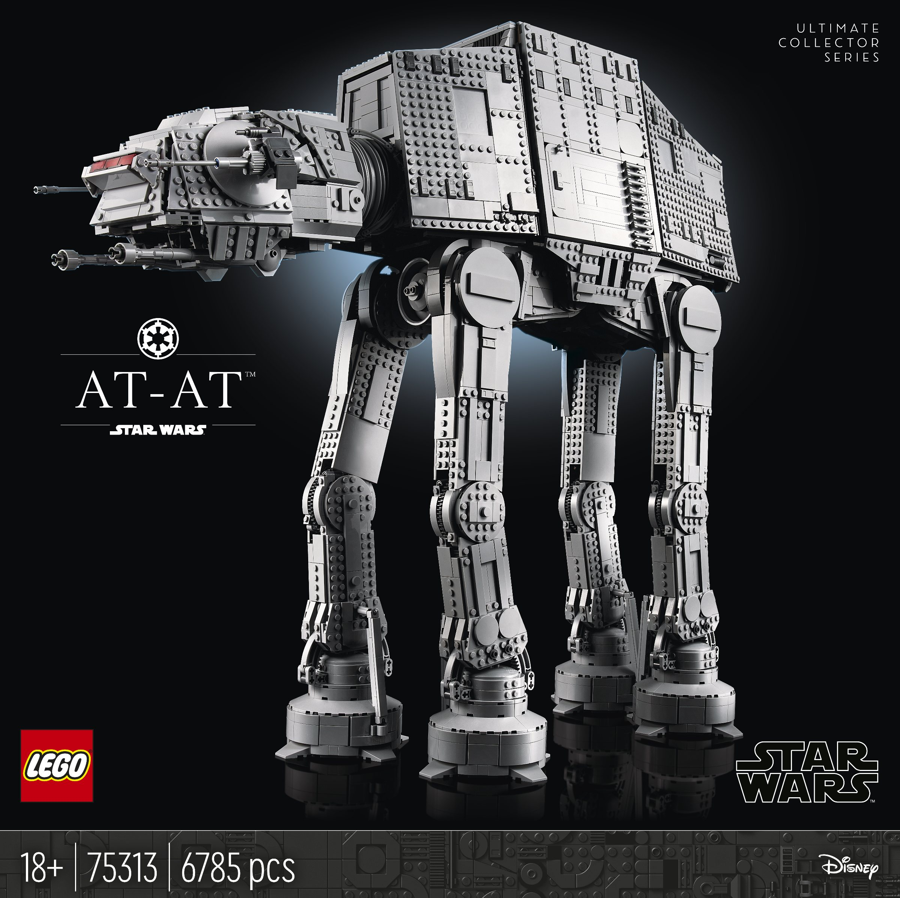

Hi! My name is Zackery Schaub! I am 18 years old, and am from Mesa, Arizona. I am a freshman here at Brigham Young Univeristy! I've attended a summer and fall semester here, but am taking a 2-year break to go serve my mission in Moscow, Russia!
(If you want to learn more about the Moscow Russia Mission, click here!)
I have a total of 3 siblings; an older brother who attends BYU as well, an older sister at UVU, and a younger sister finishing high school back in AZ.
I've lived in Arizona all my life, but we've taken plenty of vacations to Utah, California, as well as traveling for events and tournaments.
Here are some of my hobbies and interests:
- Volleyball: I played all four years in high school, playing varsity Junior and Senior year. I also played club volleyball for a long time, traveling to many tournaments from California to Florida to Chicago, as well as National Tournaments in Texas and Missouri. I've come away with plenty of hardware to show for it! I also love keeping up with the BYU Men's Volleyball Team!
- Choir: I joined choir my sophomore year of high school, and fell in love with it instantly. I joined our school's biggest group of almost 90 singers for Junior and Senior year, as well as making it into the top a capella jazz group my senior year. I sang in both Regional and All-State Choirs, and had an amazing time! Up here at BYU, I sang in the University Chorale during the summer, and made it into the BYU Men's Chorus for the fall. It truly was an amazing experience!
- Cars: I have a love for any cool-looking sports car, super car, hyper car, any of the fast stuff. My school car was a 2000 Landcruiser, which I really enjoyed, but fast cars are more of my type. One of my favorite brands for a long time has been Hennessey vehicles, and their most recent model plans to reach over 300 mph!
- Piano: I started self-teaching myself in junior high, then attended lessons throughout high school. My favorite pieces to play are anything John Schmidt or Piano Guys, as well as music from movies like La La Land.
- LEGO's: I was really into LEGO's when I was younger, and that interest never went away. As I grew up I started to collect the larger exclusive sets, and my most recent addition just came out this past Black Friday! (This monster stands almost 2 feet tall! 
I am so grateful to be attending Brigham Young University and furthering my education as well as my spiritual growth. My plan here at BYU is to study Accounting and get into the Business Program.
Here's how you can contact me!
- Email: ztschaub@gmail.com
- Missionary Email: zackery.schaub@missionary.org
- Phone: 480-562-1721